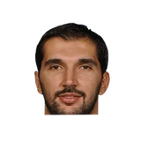

“Y'all can YouTube this too, in case you think it's fabricated. I was so upset with Rudy for not playing ... I end up having 27 points, eight rebonds and like five steals. Mind you, I hadn't played in 22-some-odd games, and this is to let you know how in shape I was. Durant had like 35, but they lost. When they gave me my interview, the first thing I said was, 'It's just all heart. Grit and grind.' That's how that phrase blossomed in Memphis. I was still upset. That was really a jab at Rudy Gay. But he's my man today, I've forgiven him for that. But yeah, that's where it started at in Memphis.”

What NBA players and coaches have said about Rudy Gay
18 quotes about Rudy Gay from 16 players, coaches and executives, newest first. Each one links to its original source.
Best quotes
Candace Buckner:Beal:
“It’s up to us to help (Gortat) out and we know that (Cousins) is a guy who loves to dominate the ball, him and Rudy Gay so we’re going to try our best to keep it out of their hands.”
“I look forward to it. There’s a lot of great people in that organization, a lot of great fans, members of the media. I’m looking forward to it, because my relationship with DeMarcus Cousins, Rudy Gay, Ben McLemore, a lot of the guys I coached, as well as the fans. They embraced me and my family. When I got fired, which was a low point, the support of the fans and the media was overwhelming. So I’m looking forward to it. But honestly, once that jump ball goes up it’s all about trying to get a win.”
What Rudy Gay has said about other players and coaches →
Quotes per season
Who talks about Rudy Gay most
- Gregg Popovich on Rudy Gay3 quotes
 Bradley Beal1 quote
Bradley Beal1 quote- Bryan Colangelo1 quote
- Chris Wallace1 quote
- Dave Joerger1 quote
 DeMar DeRozan1 quote
DeMar DeRozan1 quote DeMarcus Cousins1 quote
DeMarcus Cousins1 quote Jason Terry1 quote
Jason Terry1 quote- Justin Zanik1 quote
- Lionel Hollins1 quote
- Michael Heisley1 quote
- Michael Malone1 quote
Back and forth
- Rudy Gay and DeMarcus Cousins3 quotes
- Rudy Gay and DeMar DeRozan2 quotes
2021-22
3 quotesEric Walden:Gregg Popovich on Rudy Gay:
“He’s a great teammate, gets along with everybody well. He was a mentor to the young guys. … He really relishes that role.”
Eric Walden:Mike Conley, on talking to Rudy Gay to come to the Utah Jazz:
“After I signed my deal, Justin [Zanik] and everybody told me to call up Rudy, so I became a recruiter in a sense.… I couldn't be more excited. He's a good friend of mine, our families are really close.”
Ben Anderson:Justin Zanik on the addition of Rudy Gay:
“He offers things, better leadership, toughness, size...he compliments Bojan and Royce and other our forwards.”
2018-19
2 quotesJeff McDonald:Pop on Rudy Gay sitting tonight with a sore bursa in his right heel:
“I’m just not going to take any chances with those other three guys being out. I just can’t take a chance on getting someone else hurt.”
DeMar DeRozan on what his friend Rudy Gay has told him about what it's like to play for the #Spurs and Pop:
“All I keep hearing is, ‘You are going to love it.’ That’s it, I haven’t gotten any details. All I keep hearing is, ‘You are going to love it.’ That’s all I need to hear.”
2017-18
2 quotesTom Orsborn:Pop on Gay:
“He’s a talent. He’s actually been responsible for winning a couple of games for us already because he can score. With Tony & Kawhi out, for a lot of reasons that hurts us offensively, and he’s been able to fill that void from time to time because he is so talented.”
“Y'all can YouTube this too, in case you think it's fabricated. I was so upset with Rudy for not playing ... I end up having 27 points, eight rebonds and like five steals. Mind you, I hadn't played in 22-some-odd games, and this is to let you know how in shape I was. Durant had like 35, but they lost. When they gave me my interview, the first thing I said was, 'It's just all heart. Grit and grind.' That's how that phrase blossomed in Memphis. I was still upset. That was really a jab at Rudy Gay. But he's my man today, I've forgiven him for that. But yeah, that's where it started at in Memphis.”
2016-17
3 quotesCandace Buckner:Beal:
“It’s up to us to help (Gortat) out and we know that (Cousins) is a guy who loves to dominate the ball, him and Rudy Gay so we’re going to try our best to keep it out of their hands.”
“(Gay’s) a wonderful human being who’s grown as a player and a leader. He likes it here. We all want to win a little bit more. There’s going to be rumors. Guys in the last year of contracts, guys 6-8 who can do the things he does (on the court).”
Sirius XM NBA:Peja Stojakovic on Rudy Gay:
“We expect Rudy to be a pro & he has been a pro. He seems committed & hope you see the best of Rudy”

Peja Stojakovic on Rudy GayTwitter @SiriusXMNBA2015-16
1 quote“I look forward to it. There’s a lot of great people in that organization, a lot of great fans, members of the media. I’m looking forward to it, because my relationship with DeMarcus Cousins, Rudy Gay, Ben McLemore, a lot of the guys I coached, as well as the fans. They embraced me and my family. When I got fired, which was a low point, the support of the fans and the media was overwhelming. So I’m looking forward to it. But honestly, once that jump ball goes up it’s all about trying to get a win.”
2014-15
2 quotes“I am very excited to announce that Rudy Gay will be a part of the Kings for the long term,”
“DeMarcus Cousins is a huge talent. Attitude, a little shaky. Rudy Gay, not a proven winner in this league but a tremendous talent and a guy you can build around. “They’re in transition right now. For me, at this point in my career, I want championships.”
2013-14
2 quotesJason Jones:DeMarcus Cousins on Rudy Gay:
“He knows that I want him back. I need him on this ride.”
If his presence doesn’t resolve the small forward dilemma, the Kings can cut him loose after next season (no one walks away from $19 million) and use the money to pursue other free agents.
“I put a high premium on talent and character, and Rudy Gay has an abundance of both,”
2012-13
1 quoteRonald Tillery:Hollins:
“Rudy Gay has been a big part of our success. …I wish him the best.”
2011-12
2 quotes“Obviously, we need to seriously look at strengthening the team. But Rudy is the only player we have who can get his shot any time and any place on the floor. You can’t afford to get rid of him and not bring in somebody who can do more. I think Chris has to be open-minded about everybody on the roster. But I don’t know how else I can say this: There is no plan to trade Rudy Gay.”
Griz general manager Chris Wallace said.
“Sam earned his keep around here and is clearly an NBA player. He was a guy who was a big part of us being able to be successful when Rudy Gay went down last year. But teams evolve.”